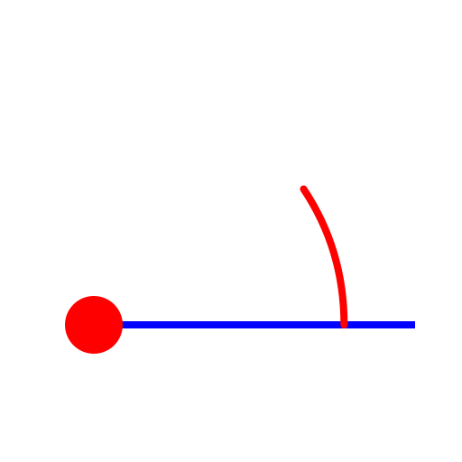

Line from Angle
Toolbar / Icon:


Menu: Draw > Line > Line from Angle
Shortcut: L, A
Commands: lineangle | la
Description:
Use this tool to create lines with a given angle. The line is usually
trimmed to the desired length after creating it.
Procedure:
- Enter the angle and length of the line in the options tool bar.
- In the options tool bar, choose the reference point on the line which you
want to use for positioning the line. 'Start' means that the line will have
its start point at the point where you position it.
- Place the line with the mouse or by entering a coordinate in the command
line.